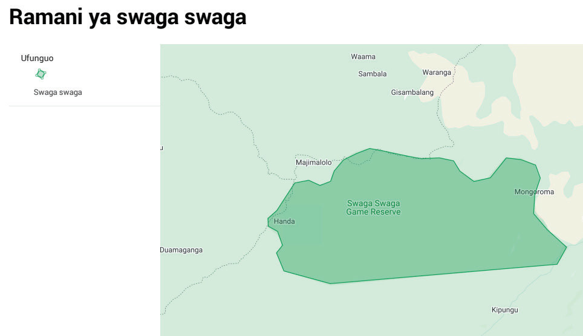

11. Chagua ukubwa wa karatasi (3), uelekeo wa karatasi (4) na muundo wa kuchapa kati ya PDF au picha (5), Kisha bofya “Print” (6) kuhifadhi ramani kama PDF au picha, kama inavyowasilishwa katika Kielelezo namba 15 na Kielelezo namba 16.

Kielelezo namba 16: Ramani ya hifadhi ya Swaga Swaga
Kazi ya kufanya namba 9
- Chagua eneo lolote ndani ya mkoa unaoishi au mbuga maarufu nchini Tanzania, kisha ichore kidijitali.
- Eleza mambo uliyozingatia wakati wa uchoraji wa ramani yako.
- Ni vipengele gani muhimu katika ramani havipo kwenye ramani yako ya kidijitali?
Zoezi la nne
- Ni programu gani zinatumika katika uchoraji wa ramani za kidijitali?
- Taja mahitaji muhimu katika uchoraji wa ramani za kidijitali
- Ni kwa namna gani unaweza kuchapisha ramani uliyoichora kidijitali?